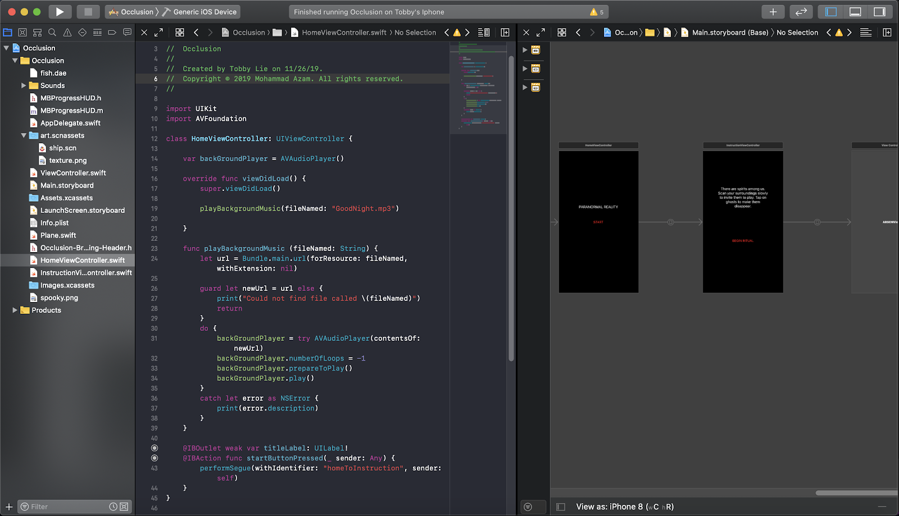

Paranormal Reality iOS Augmented Reality Game
Paranormal Reality lets users be part of their own terrifying “found footage” horror reality. Using Apple’s advanced ARKit to bridge the paranormal realm with this one, users will be able to search for other worldly beings, if they dare. Paranormal Reality is a highly immersive gameplay experience that utilizes intelligent AR agents with object occlusion in order for NPCs to interact with the player in a new and interesting way.